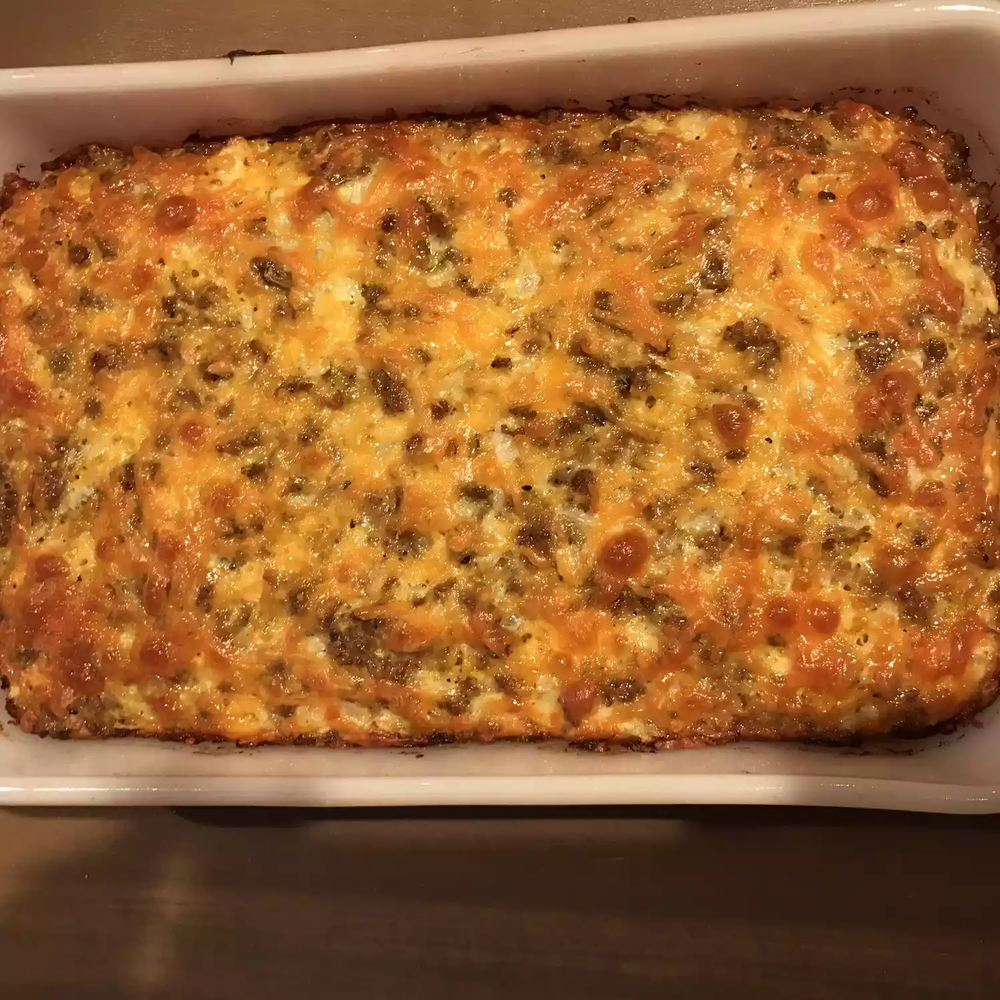

Sausage Casserole

Description
The sausage casserole is mouth-watering, bowl-scrapping good! This recipe also makes a great dinner entree.
Prep Time: 25 mins Cook Time: 1 hrs 25 mins Additional Time: 5 mins Total Time: 1 hrs 35 mins Servings: 12
Ingredients
- 1 pound sage flavored breakfast sausage
- 3 cups shredded potatoes, drained and pressed
- 1/4 cup butter, melted
- 1(16 ounce) container small curd cottage cheese
- 12 ounces mild cheddar cheese, shredded
- 1/2 cup onion, shredded
- 6 jumbo eggs
Steps
- Preheat the oven to 375 degrees F(190 degrees C). Lightly grease a 9x13inch baking dish.
- Heat a large, deep skillet over medium-high heat. Cook sausage in the hot skillet until evenly browned and crumbly, 5 to 7 minutes. Drain and discard grease.
- Stir together shredded potatoes and butter in the prepared baking dish; lightly press mixture into the bottom and sides of the dish. Mix together sausage, cottage cheese, Cheddar cheese, onion, and eggs in a bowl. Pour over potato mixture.
- Bake in the preheated oven until a toothpick inserted into the center of casserole comes out clean, about 1 hour. Let cool for 5 minutes before serving.